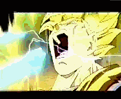

Forums galactiques > Taverne galactique : lieu de discussion informel > offre
Pages : 1
rambo 28/08 ETU 12:58 | J'offre toutes mes ressources au premier qui répond ici |
| Pinki winki  28/08 ETU 13:00 | Je suis le premier, tu me les offres? ça serait génial je suis nouveau et je n'ai pas grand chose.. |
rambo28/08 ETU 13:01 | Oui c'est bon félicitation à toi, regarde tes comptes rendus |
rambo28/08 ETU 13:04 | Je suis d'solé je n'ai pas assez de transporteurs, je t'y enverrai en plusieurs fois |
Pinki winki28/08 ETU 13:05 | D'accord, pas de problme, mci bcp |
Meluthi 28/08 ETU 14:22 | et rambo t oubli tes vieu pote je te rapelle que tu est un des 5 divin de lancien culte de bodet alors vais en profiter tes frère |
yankee 28/08 ETU 21:26 | Voila la (puissante) coalition dont Bodet parlait : titre : Culte Bodet 5 divins : Rambo, Meluthi, ... J'en entends deja quelques uns qui rigolent deja, moins fort s'il vous plait ^^ |
Obiwan Kénobi 28/08 ETU 21:45 | Wow bodet comptais pour 99 pour cent de sa coalition... |
HK-48 28/08 ETU 21:53 | 99,98... |
Zeus29/08 ETU 10:40 | Le premier a m'envoyer une proposition pour l'intégralité de mes ressources les remporte toutes : 352550 Leem(s) 4500 Métaux 161000 Énergie 77 Diamants |
gégé 29/08 ETU 10:42 | Ah ben c'est du beau tout ça, hein cher HK-48 ... |
Zeus29/08 ETU 10:45 | Soyez sans crainte, j'écoulerais une paisible et silencieuse retraite. |
HK-4829/08 ETU 11:08 | Gégé arrête ils ne comprennent rien ^^ |
Pinki winki29/08 ETU 13:25 | J'ai jamais été dans une coalition à Bodet! Fin du moins pâs dans cet univers! ^^lol |
Muse suprême Bella 29/08 ETU 14:38 | Je vais vous renseignée sur le culte de bodet dont le grand livre Sacrée vous sera trés vite disponible ds la V2, en réalité se culte fu fondé il a de cela 2 millénaire, c'était un culte Monothéiste, dont le dieu suprême étant chargé de nous montré la voix se nommé Bodet, notre seigneur et maitre comme les fidéle l appelé, pour diffusé le culte et le géré ainsi que le défendre, bodet nomma 3 mortel l un Grand Archimage Supréme, l odre Garde d'honneur et le troisiéme Grand Administrateur, chacun regissa alors la branche de l armée que bodet lui avai confié c'est a dire la Religion l adminsitration et l armée, mais bodet ne nous informa pas qu avec la déesse mere, La Terre, de son ugnion avec cette derniere il engendra une porté divine, au total 5 dieu, ceux ci avai chacun leur pré disposition et se montrérent trés vite plus affectueux envers les membre du culte que leur pere le Seigneur Bodet qui devenai tyrannique, les fidel assistérent alors a un patricide mené par les propore enfant de bodet envers sa personne, le culte fu refondé, devin polythéiste et l ancienne religion celle de bodet, devin prohibée et combattu, tous les fidel qui refusérent l utorité des nouveau divin furent considéré comme hérétique et pourchassé par l armée, jugé par la justice, executé ou converti par la religion, eduqué par la voix de la sagesse et purent avoir une vi artistique, ces 5 voix chacun des fils et fille de bodet en prenna la carge avec comme leur représentan sur terre leur fidéle, mais leur nom restera caché juska l avénement de ceux ci dans la V2, la seul foi de ces dieu est de convertir la galaxie a leur culte, cette histoire sera deja l une des premiére énigme de la future vie qui nous atten dans trés peu de temps. |
gégé29/08 ETU 14:59 | J'échange 23 croiseurs lourds HA contre 23 000 kamikazes. |
rambo31/08 ETU 12:11 | HS gégé |
dark 31/08 ETU 13:25 | c clair completement Hors Sujet! mais c'est pas mal comme reflexion et je suis d'accord pour l'echange! (par contre, ma page de commerce ne marche plus, je te demande de faire toi meme l'echange!) |
Pages : 1
Forums galactiques > Taverne galactique : lieu de discussion informel > offre